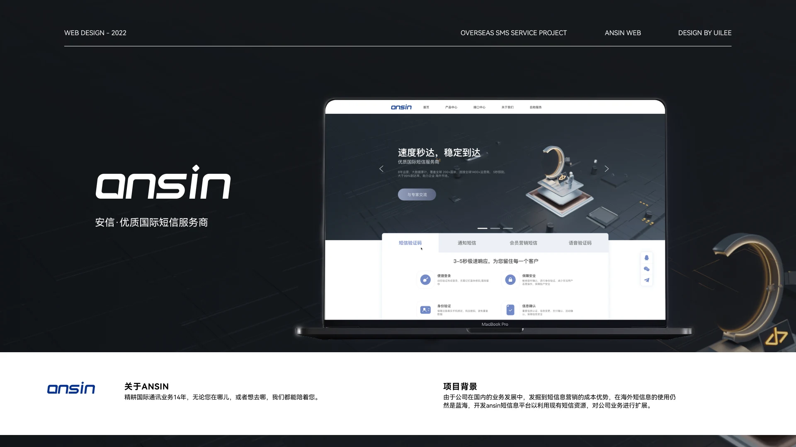
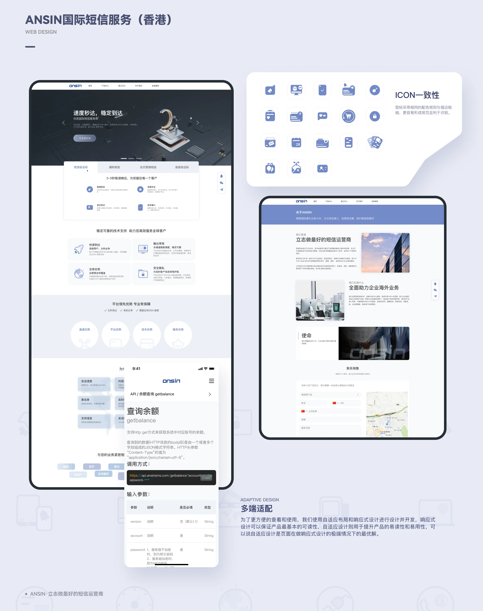
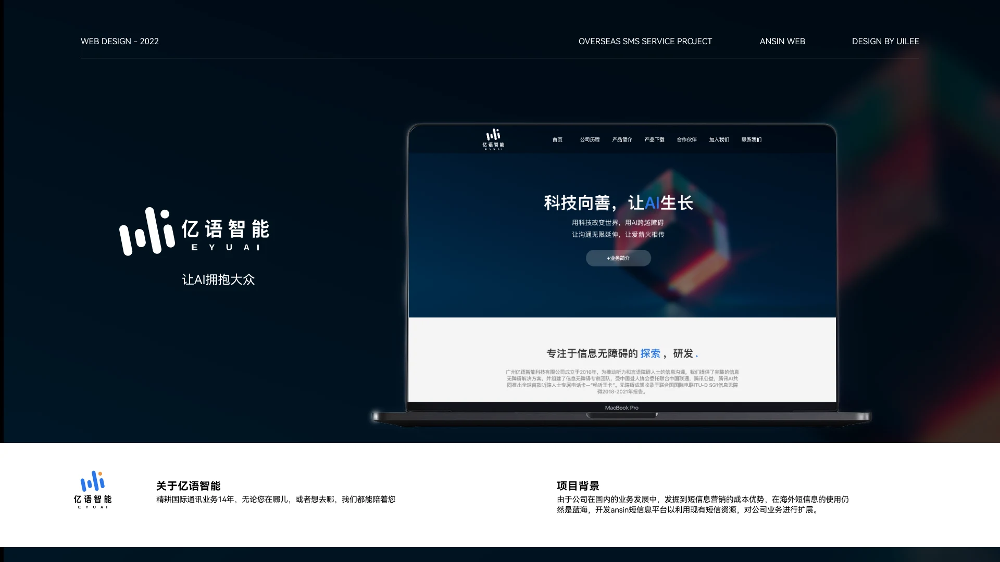

09 / 界面设计 / 2020 - 2023
企业官网设计
ANSIN 国际短信服务官网 · 亿语智能官网改版
项目背景
两件面向海外与公众的品牌官网设计。ANSIN 国际短信服务（香港）官网面向跨境短信服务商，亿语智能官网面向信息无障碍领域，两者都要求在首屏讲清业务价值、在长页面里保持视觉节奏，并同时兼顾桌面端与移动端的可读性。
信息量与克制的平衡
企业官网和作品集官网是两类容易做砸的页面：前者承载品牌与线索获取，后者的读者是设计师同行。共同难点在于信息量与克制之间的平衡 —— 业务要点、案例、团队、联系方式都要放进去，但首屏一旦塞满就失去说服力；同时大量海外客户在移动端浏览，长页面在小屏上的节奏塌掉就等于失去一半读者。
价值主张先行，其余分层下沉
首屏只留一句话价值主张加一个明确动作入口，其余内容分层下沉：长页面用明确的模块标题与留白分隔，段落控制在三行以内。视觉上用同一套色板与字号阶贯穿全站，图标按统一网格重绘，保证列表页、详情页与移动端的观感一致。响应式不靠等比缩放，而是为窄屏重排信息优先级，把长表格与多列布局折叠成可横滑的模块。
交付范围
- 首屏价值主张与行动入口
- 业务能力模块与图标网格
- 公司历程与里程碑时间轴
- 数据图表与信息密度控制
- 响应式重排与移动端适配
统一的官网设计语言
两套官网在同一套设计语言下交付：统一的色板、字阶、圆角与图标网格贯穿全部页面，主站与移动端共用同一套栅格逻辑，改版后新增内容不需要重新定规范。交付物包含高保真设计稿、图标源文件与可交付给研发的组件规范。
下一步
后续把官网与内容管理后台的设计规范打通，让运营同事自己排版时也不会破坏既有节奏；同时补一套深浅色双主题，适配不同品牌方的使用习惯。
我的职责
独立负责两个官网的品牌视觉方向与界面设计，包括首屏、信息架构、图标体系与响应式适配，并输出高保真设计稿与组件规范供研发还原。
界面展示




其他作品
- 领克数云 · 全平台2024 - 2026
- KEKE · IP 设计2025.03
- 畅听助手 APP2020.01 - 2023.05
- 小沃无障碍通话助手2020.01 - 2023.05
- Umeta 2.12023.07 - 2024.02
- Appleland Web2023.07-2024.02
- 模友圈2022.08 - 2023.01
- 智屏2021.07 - 2023.01
有项目要一起做？
可承接 UI/UX 设计外包与兼职合作：B 端后台与数据平台界面设计、微信小程序与移动端界面、无障碍与适老化设计、交互原型与设计规范交付，支持远程协作。
邮箱 965333099@qq.com ｜ 微信与手机同号 18666099550